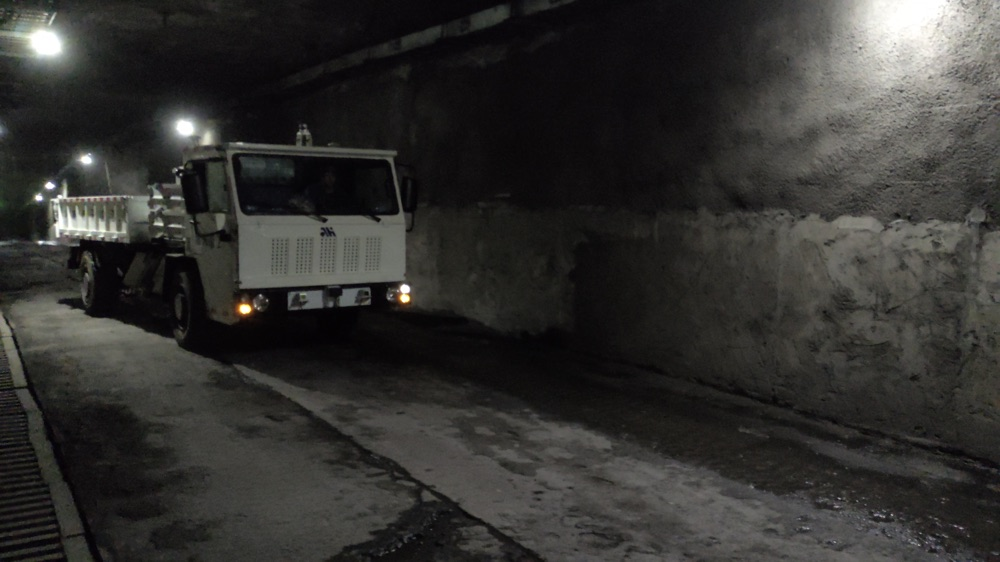
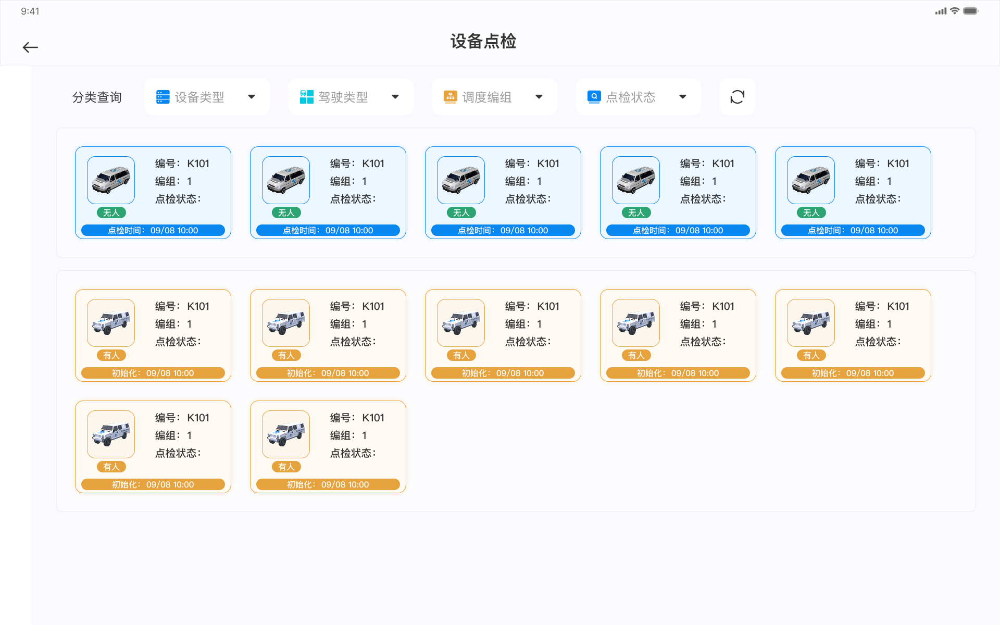
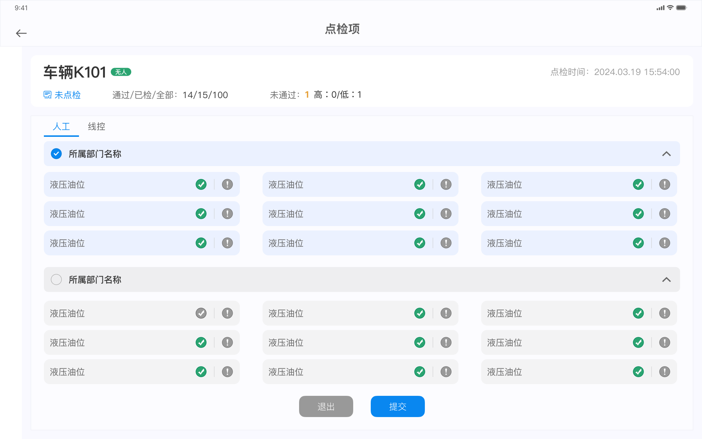
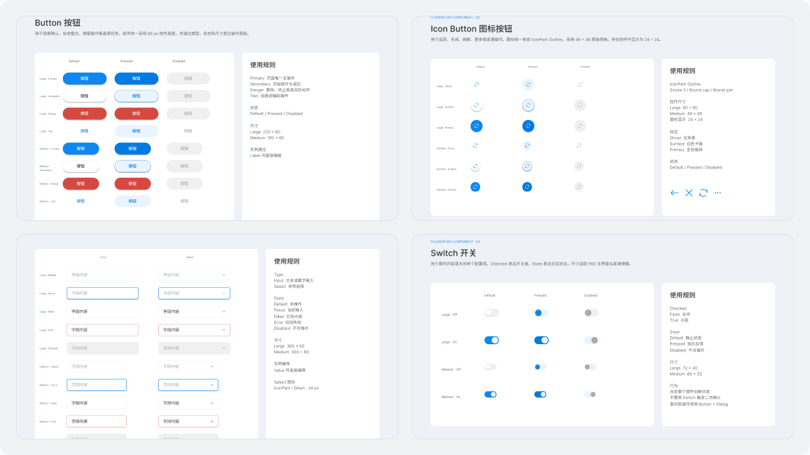
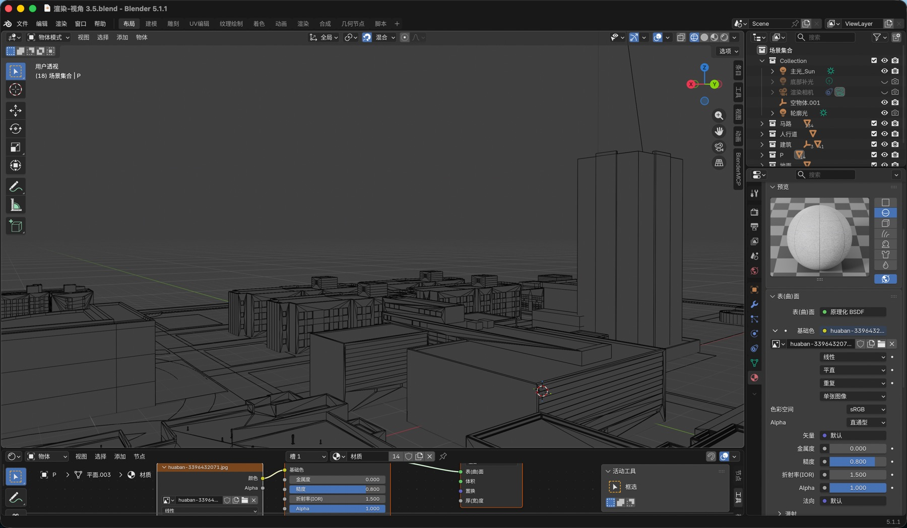
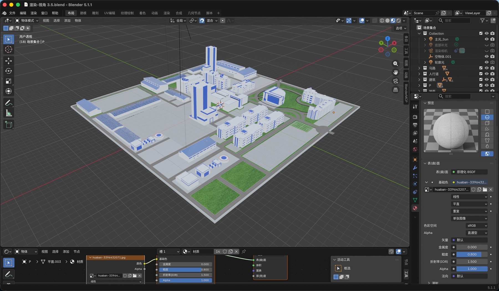

Context
The internal product and engineering team built the system for the company’s own autonomous mining operations. The interface had to work with real vehicles, live operational data, and established field workflows.
Industrial HMI / Autonomous Mining
A tablet-based system for dispatching autonomous vehicles, monitoring operations, handling exceptions, and completing equipment inspections in an active mining environment.

Project overview
The product brought fleet dispatch, individual vehicle control, alerts, and equipment inspection into a tablet interface used by dispatch and safety personnel.
The internal product and engineering team built the system for the company’s own autonomous mining operations. The interface had to work with real vehicles, live operational data, and established field workflows.
Core functions were fragmented, operational feedback lacked a clear visual structure, and the previous interface had not been designed for the target tablet or bright field conditions.
I joined field visits, contributed to requirements synthesis, designed most prototypes, completed all high-fidelity UI and 3D assets, validated the work on the target tablet, and supported engineering delivery.
Field context
I visited the operating environment with the product manager and spoke with people involved in dispatch, safety checks, inspection, and remote takeover. We translated what we learned into interface tasks that could be reviewed with the wider team.



Operational status, vehicle selection, and task feedback needed a clearer hierarchy than the previous template-based interface.
Type size, information density, touch areas, and contrast had to remain usable beyond a desktop design canvas.
Remote takeover, task termination, and exception handling required clear state changes, confirmation, and feedback.
Workflow synthesis
Fleet dispatch
Vehicle control
Equipment inspection

From field tasks to an end-to-end tablet workflow, reliable, clear, and actionable interfaces support autonomous haulage operations.

Safety workflow
The inspection flow separates manual and drive-by-wire checks, keeps vehicle and completion status visible, and uses grouped items to control density.


On-device validation
I requested a real project tablet and repeatedly viewed the high-fidelity work on the device. This exposed issues that were less obvious on a desktop canvas and informed further adjustment before implementation.
Core workflow: select a vehicle, confirm status, dispatch a haulage task, monitor feedback, and intervene when exceptions occur. Dispatchers work on one screen, using repeated status feedback and confirmation to stop a task or take remote control in time.
Type size, hierarchy, and information density at the intended viewing distance.
Control size and spacing for common and high-impact actions.
Visibility of status changes, warnings, confirmation, and task results.
System and delivery
I defined reusable interface rules, produced the map and vehicle assets used by the product, prepared exports, and worked with frontend engineering through implementation.



Delivery evidence
The project moved through requirements, prototypes, high-fidelity UI, development, testing, and deployment from April to July 2024.
Fleet dispatch, individual vehicle control, and equipment inspection use a shared hierarchy and feedback model.
Testing on the target tablet reinforced that an interface that looks clear on a desktop canvas is not automatically usable in the field. If I continued the work, I would simplify several dense screens and validate more task flows directly with operators earlier.